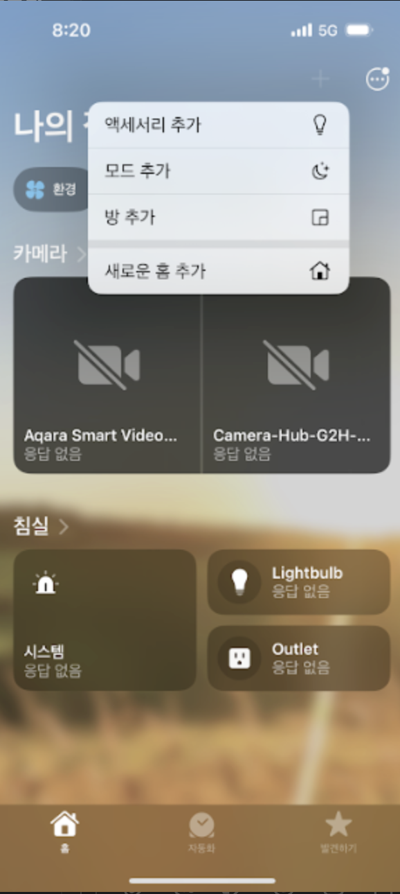
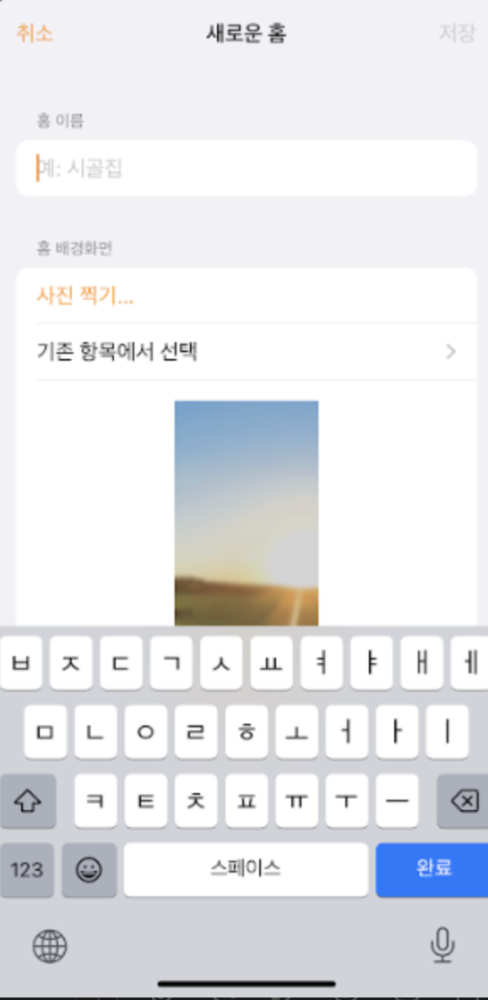

3 Apple HomeKit 연동
3.1 Apple HomeKit 연동 리스트
애플 홈킷과 연동되는 아카라 허브 리스트
스마트 허브 E1
스마트 허브 M2
스마트 카메라 허브 G2H/G2H Pro
스마트 카메라 허브 G3
아카라 허브 없이 단독으로 애플 홈킷에 연결되는 아카라 디바이스
스마트 도어락 K100
스마트 도어벨 G4
스마트 카메라 E1
재실 감지 센서 FP2
모션 센서 P1 (Thread/Matter 디바이스)
열림 감지 센서 P2 (Thread/Matter 디바이스)
아카라 허브를 통해 애플 홈킷에 연결되는 아카라 디바이스
아래 아카라 디바이스는 반드시 아카라 허브(E1,M2, G2H/G2H Pro,G3)를 필요로 합니다.
스마트 무선 미니 스위치 T1
스마트 리모트 스위치 T1 1구
스마트 리모트 스위치 T1 2구
스마트 큐브 T1 Pro
무선 노브 스위치 H1
문열림 감지 센서 T1
열림 감지 센서 P2
모션 센서 T1
고감도 모션 센서
재실 감지 센서 FP1
재실 감지 센서 FP2
온습도 센서 T1
조도 센서 T1
누수 감지 센서 T1
스마트 플러그
스마트 조명 스위치 1구 (중성선 불필요)
스마트 조명 스위치 2구 (중성선 불필요)
스마트 조명 스위치 H1 (1구, 중성선 필요)
스마트 조명 스위치 H1 (2구, 중성선 필요)
스마트 조명 스위치 H1 (3구, 중성선 필요)
싱글 스위치 모듈 T1 (중성선 필요/B2B 전용 제품)
듀얼 릴레이 모듈 T2 (중성선 필요)
정전류 드라이버 T1 Pro (B2B 전용 제품)
스마트 LED 스트립 드라이버
스포트라이트 H1
LED 스트립 T1
스마트 커튼 컨트롤러
스마트 블라인드 컨트롤러
3.2 Apple 홈 허브 설정
(1) 일반적인 홈 허브 설정 방법은 하기 사이트를 참조하세요.
https://support.apple.com/ko-kr/HT207057
(2) Thread/Matter 지원 홈 허브 설정 방법은 하기 사이트 참조하세요.
- (중요) 애플 TV를 홈 허브로 사용할 경우 반드시 이더넷 케이블 대신 Wi-Fi로 연결하셔야 합니다. 아이폰 또는 아이패드가 연결되는 있는 똑같은 Wi-Fi네트워크에 연결해 주세요. 자세한 내용은 아래 사이트 참조하시기 바랍니다.
3.3 FAQ
질문 1: 아이폰으로 아카라 허브를 아카라홈앱에 설치하면서 애플 홈킷 연동을 하려고 했는데 계속해서 에러가 발생합니다. 설치시 에러코드는 74로 나옵니다. 이 경우 어떻게 해야 하는지요? 사실상 다른 아카라허브는 이미 애플홈킷과 잘 연동하여 사용하고 있습니다.
답변 1:
다음과 같이 설치를 진행해 보시기 바랍니다.
(1) 먼저 애플홈에 남아 있는 아카라허브와 관련된 내용이 있다면 삭제해 주세요.
(2) 다음과 같이 애플홈에서 “새로운 홈”을 추가하거나 기존 홈을 제거한 후 “새로운 홈”을 등록해 주세요.


(3) 아카라허브를 초기화 하신 후 (허브별 설치매뉴얼 참조: https://aqara-docs.github.io/manual) 아카라홈에 아카라허브를 설치하세요. 설치하는 과정에서 (2)에서 생성한 “새로운 홈”을 선택해 주세요.
만약 계속해서 애플홈 추가에 실패할 경우 애플 홈 기기를 재부팅한 후 위 과정을 반복해 주세요.
아카라 홈 앱에 설치하는 과정에서 애플 홈킷 바인딩과 관련된 과정없이 진행된다면, 아카라 홈 앱에 설치 완료 후 애플 홈킷에서 “액세서리 추가” 메뉴를 통해 QR코드 스캔 또는 설정코드를 입력 후 애플 홈킷 바인딩 과정을 진행해 주세요.
질문 2: 애플 홈에서생성된 자동화가 동작하지 않습니다. 어떻게 해야 하는지요?
답변 2:
(1) iPad, Apple TV, HomePod을 홈 허브로 사용하는 경우, iPad, Apple TV, HomePod가 라우터에 연결되어 있는지 확인하세요. iPad에서 비행 모드를 사용하지 않도록 설정하세요.
(2) “홈” 앱을 열고 자동화가 비활성화되어 있는지 확인하세요.
(3) 자동화에 대응하는 액세서리가 오프라인인지 확인하세요. 온라인으로 복원한 후 다시 시도하세요. 허브가 오프라인인 경우 허브를 다시 시작한 후 다시 시도하세요.
(4) iOS 장치에서 “홈” 앱 “홈” 페이지를 열고 오른쪽 상단의 “내비게이션” 아이콘을 탭한 다음 “홈 설정”을 클릭하세요. “홈” 목록에서 홈을 선택한 후 “홈 허브” 아래에서 홈 허브가 “연결됨”으로 표시되는지 확인하세요.
(5) iPad을 홈 허브로 사용하는 경우 iPad의 Wi-Fi 스위치를 다시 활성화하고 다시 시도해 보세요.
질문 3: 애플 홈에서 생성된 자동화의 딜레이가 많습니다. 왜 그런가요?
답변 3:
(1) 자동화 기능은 홈 허브의 참여가 필요하므로 홈 허브와 아카라 허브가 동일한 LAN에 있고 공유기 Wi-Fi 네트워크가 안정적이고 신뢰할 수 있는지 확인하세요. 공유기에 연결된 클라이언트 수는 20개를 넘지 않는 것이 좋습니다(공유기 성능에 따라 다름). 애플, Mi, TP-LINK, NETGEER 브랜드의 라우터를 구입하는 것이 좋습니다.
(2) iPad을 배터리 모드로 사용하여 홈 허브로 사용하는 경우, iPad의 화면이 어두워지면 공유기와의 통신 심박동 간격이 길어집니다. 따라서 iPad을 사용하지 않을 때에도 iPad을 충전 상태로 유지하여 iPad의 화면이 어두워져도 공유기와의 상호 통신을 유지할 수 있도록 합니다.
(3) 아카라디바이스와 아카라 허브 간의 통신이 신뢰할 수 있도록 보장합니다. 아카라디바이스와 허브 간의 통신이 불안정한 경우 실행이 크게 지연될 수 있습니다.
질문 4: 애플홈 앱이 계속해서 “장면 및 액세서리 로드 중…”이라고 표시됩니다. 왜 그런가요?
답변 4:
아이폰이 오랫동안 iCloud 데이터를 백업하지 않았거나 전혀 iCloud와 데이터를 동기화하지 않았기 때문입니다. 따라서 HomeKit을 사용하기 전에 수동으로 iCloud 데이터를 동기화해야 합니다. 해결 방법: 전화기에서 “설정” - “당신의 Apple ID 계정” - iCloud - iCloud 백업 - “수동 백업”을 클릭하면 동기화가 완료된 후 준비가 됩니다.
질문 5: 아카라 홈앱이 항상 “클라우드 데이터 동기화 중…”라고 표시됩니다. 왜 그런가요?
답변 5:
아이폰이 오랫동안 iCloud 데이터를 백업하지 않았거나 전혀 iCloud와 데이터를 동기화하지 않았기 때문입니다. 따라서 HomeKit을 사용하기 전에 iCloud 데이터를 수동으로 동기화해야 합니다. 해결 방법: 전화기에서 설정 - “자신의 Apple ID 계정” - iCloud - iCloud 백업 - “수동 백업”을 클릭하면 동기화가 완료된 후 준비가 됩니다.
질문 6: 애플홈을 통해서 알림 푸시를 받고 싶습니다. 어떻게 알림 푸시를 켤 수 있는지요? 예를 들면, 문이 열리면 모바일 폰으로 문이 열렸음을 알리는 알림을 받습니다
답변 6:
iOS 11 이상에서는 열림감지센서와 같은 HomeKit 액세서리를 사용할 수 있습니다. (현재 아카라 제품 중 알림 푸시를 지원하는 제품은 다음과 같습니다: 열림감지센서, 모션 센서, 진동 센서 및 누수 센서등) 액세서리가 이상을 감지하거나 특정 시간에 알림을 받도록 설정합니다. 예를 들어, 집에 열림감지 센서가 설치되어 있으면 집에 있을 때 문이 열리면 알림을 받습니다. 이를 설정하는 방법은 다음과 같습니다:
(1) Apple “홈” 앱을 엽니다.
(2) 액세서리를 누르고 길게 누른 다음 세부 정보를 탭합니다.
(3) 상태 및 알림을 탭합니다.
(4) “알림 허용”을 켜고 다음 중 하나를 선택합니다:
시간: 액세서리가 알림을 보낼 시간을 설정합니다.
사용자: 집에 계시거나 떠날 때 액세서리에서 알림을 받습니다. 이 옵션을 선택하려면 홈 허브를 구성하고, 홈 허브를 구성할 때 “[your name]”> “iCloud”> “Share My Location” 및 기기를 선택하여 집에 있는 모든 액세서리를 제어할 수 있는지 확인합니다.
(5) 작업을 완료하려면 왼쪽 상단의 “뒤로”를 탭하고 “완료”를 탭합니다.집을 벗어나 있을 때 HomeKit 액세서리에서 알림을 받으려면 원격으로 HomeKit 액세서리에 액세스할 수 있는 홈 허브를 설정하십시오.
질문 7: 애플홈킷 설정코드는 무엇인지요?
답변 7:
HomeKit 설정 코드는 8자리 숫자로 구성되어 있으며 QR 설정 코드 또는 숫자로 제품 또는 포장에 붙여져 있습니다. 각 제품에는 액세서리를 추가할 때 식별 및 페어링을 위해 고유한 HomeKit 설정 코드가 하나씩 있습니다. HomeKit 설정 코드를 보관하고 다른 사람과 공유하지 않도록 주의하십시오.
질문 8: 아카라홈 앱의 동시 실행에서 Siri에 추가한 단축어 정상 동작 안 할 경우 다른 대안이 있는지요?
답변 8:
만약 동시 실행에서 Siri에 추가한 단축어가 정상 동작하지 않을 경우 다음과 같이 애플 홈킷에 자동화를 생성 시킬 수 있습니다.
아카라홈 앱 >> 동시 실행 >> 추가할 동시 실행 선택 >> 우측 상단 […] 클릭 >> 애플 홈 추가